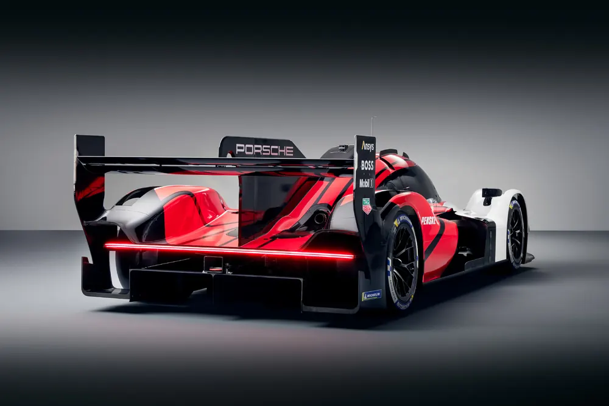

Porsche
Le recordman des victoires (19) a terminé deuxième en 2025, puis l'équipe d'usine a quitté le championnat du monde.
Absent en 2026. Porsche Penske Motorsport a quitté le championnat du monde d'endurance (WEC) fin 2025.
Son synthétisé en direct à partir de l'architecture du moteur (nombre de cylindres, turbo, régime) : ce n'est pas un enregistrement.
Porsche 963
La Porsche 963 est une LMDh à châssis Multimatic, animée par un V8 biturbo de 4,6 litres. Pour le centenaire, Porsche Penske Motorsport avait engagé trois voitures (n°5, n°6 et n°75).
En 2024, Porsche décroche le titre mondial des pilotes en WEC avec Kévin Estre, André Lotterer et Laurens Vanthoor. En 2025, la n°6 termine deuxième au Mans, coincée entre deux Ferrari.
Fin 2025, Porsche a retiré son équipe d'usine du championnat du monde d'endurance : aucune 963 n'était au départ des 24 Heures 2026. Porsche reste le constructeur le plus titré au Mans avec 19 victoires, la dernière en 2017.
- 2023Débuts
Trois 963 au départ du centenaire, sans podium pour cette première.
- 2024Titre WEC
Estre, Lotterer et Vanthoor sont sacrés champions du monde des pilotes.
- 20252e
La n°6 termine à 14 secondes de la Ferrari n°83 et sépare les deux Ferrari sur le podium.
- 2026Absent
Retrait de l'équipe d'usine : aucune Porsche en Hypercar.